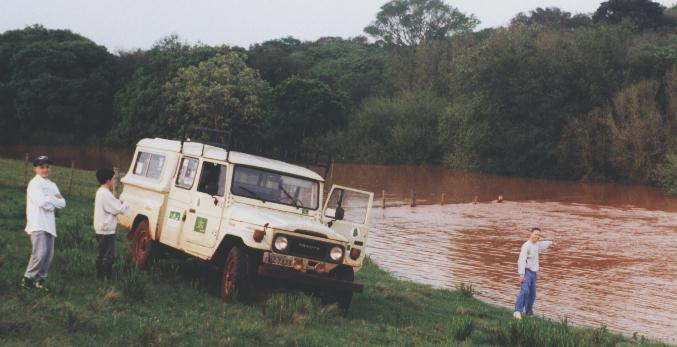
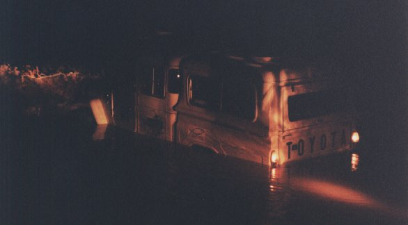
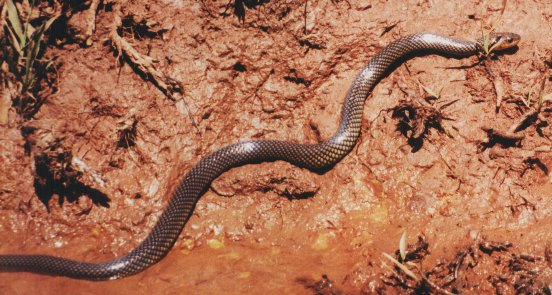
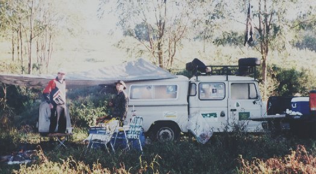

Para o Projeto Bacia do Rio Urugua
i
Subprojeto
Bacia do Rio da Várzea
Algumas Imagens

Local: Ponto 1 - Rio da Várzea Arquivo CEPEN / 479 / Marcelo De Negri Xavier
Enchente no
ponto V1
do Rio da Várzea,
testemunhada por Tiago B. Branda, Ítalo Pauletti e André Branda.

Local: Ponto 1 - Rio da Várzea Arquivo CEPEN / 507v / Marcelo De Negri Xavier
A cheia, às vezes, nos prega peças.

Local: Ponto 1 - Rio da Várzea Arquivo CEPEN / 504v / Marcelo De Negri Xavier
Esta cobra-d'água,
Liophis sp.
aproximou-se sem cerimônia, em pleno sol,
para comer restos de vísceras de peixes em um acampamento.
Embora tida como inofensiva, pode morder se molestada,
e o ferimento pode desencadear complicações.

Local: Ponto 3 - Rio da Várzea Arquivo CEPEN / 504v / Marcelo De Negri Xavier
Silvano Arruda e André Branda, importantes colaboradores,
"esquentando os ossos" com um bom chimarrão,
numa fria manhã às margens do Rio da Várzea.